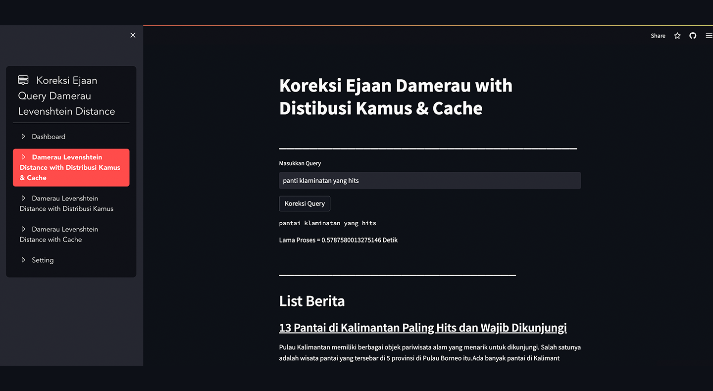

MY PROJECT

Koreksi Ejaan Query
Program koreksi ejaan pada query menggunakan
metode Damerau Levenshtein Distance pada
Search Engine Bahasa Indonesia (SEBI)

Klasifikasi Berita
Program klasifiskasi berita pariwisata menggunakan
metode SVM dan seleksi fitur ANOVA
Pantai Tlangoh
Sentimen Analysis
Program analisa sentimen dari pengunjung pantai Tlangoh dari
data ulasan google maps dengan
metode SVM